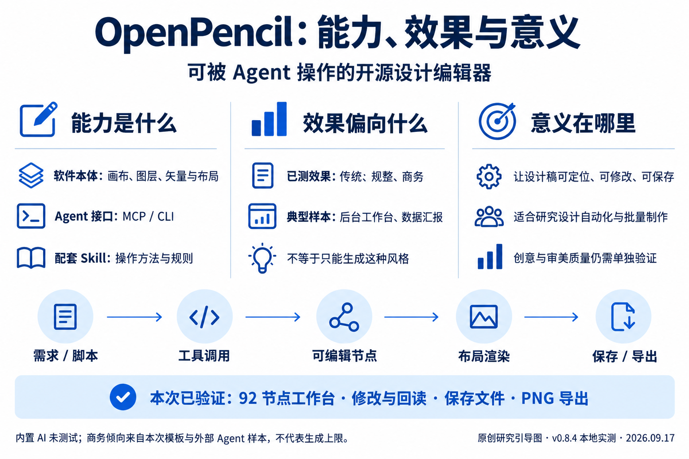
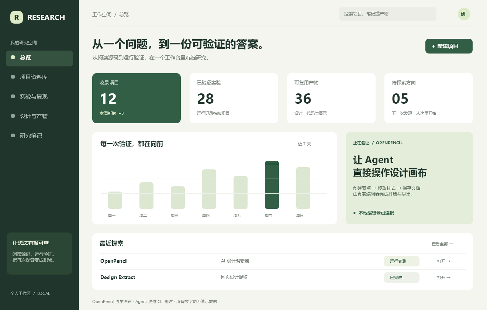
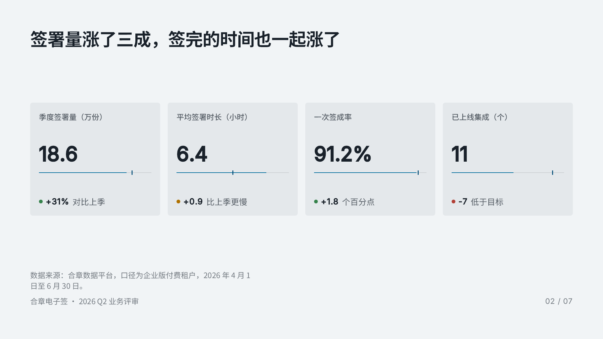
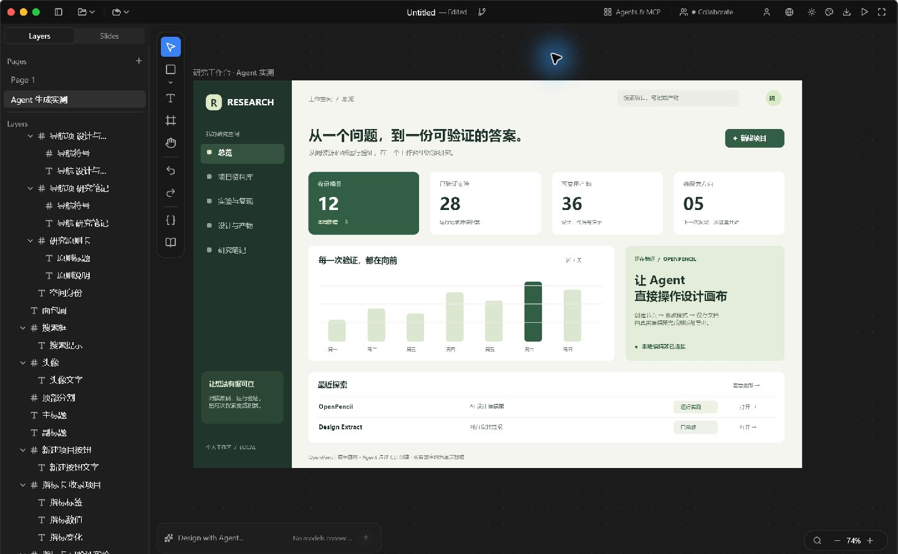

{kind=link}
{kind=link}
{kind=link}
{kind=link}
软件本体
桌面版与 Web 编辑器，提供画布、图层、属性、矢量图形、自动布局和组件。人可以直接编辑。
OpenPencil 把设计编辑器与 MCP / CLI 接口连在一起，让人和 Agent 创建、修改、保存、导出可编辑设计稿。本次样本偏向规整的后台界面、数据看板与商务汇报；它对我们的主要意义，是提供可定位修改、可持续迭代的设计自动化基础。
有独立编辑器；Skill 是配套说明。
本次以模板和工作台为观察样本。
可批量操作、定点修改与保存交付。
结论边界：“偏传统商务”是我们对已测效果及当前参考价值的判断。官方模板本来偏汇报，我编写的工作台也采用保守布局；内置 AI 尚未测试，不能据此断言它只能生成这种风格。

固定的侧边导航、指标卡、柱状图和表格；规整的栅格、克制的配色、标准化的信息层级。它们适合把业务信息讲清楚，但这次样本没有展示出鲜明的品牌语言、丰富的视觉叙事或复杂的动态交互。

脚本由当前 Agent 编写，上游编辑器真实渲染。数字为演示数据，按钮未接业务；不是内置 AI 自主生成。

官方 tidemark-slate-deck，351 个节点。内容、公司名称与数据来源文字均来自上游样例，并非真实业务统计。

原生程序启动、CLI/MCP 连通、模板加载、节点创建、标题修改、文件保存与重新读取、PNG 导出。最终文档有 2 个页面，共 443 个节点。
内置模型对话生成、多 Agent 编排、Figma 导入、框架代码导出、PPTX 导出和实时协作。设计 lint 保留 19 条需要结合设计意图判断的提示。
桌面版与 Web 编辑器，提供画布、图层、属性、矢量图形、自动布局和组件。人可以直接编辑。
通过 MCP 和命令行，让外部 Agent 读取文档、插入图层、修改属性，再保存和导出。
教 Agent 如何使用 OpenPencil 的知识与工作方法。实际操作由编辑器和工具接口执行。
工具栏、图层树、属性面板与中央画布，是传统桌面设计器常见的组织方式。OpenPencil 当前采用 Rust、jian 和 Skia；这里的相似是操作形态。设计稿也不等于已经接好业务、可安装使用的软件。
| 方向 | 能制作的内容 | 本次如何看待 |
|---|---|---|
| 后台与工作台 | 导航、指标卡、表格、管理界面 | 已测设计稿 最贴近本次呈现效果 |
| 业务汇报与演示 | 幻灯片、数据报告、流程与对比页 | 已测模板 规整商务风格较明确 |
| 网站与移动界面 | 落地页、登录页、App 多屏设计 | 有相关能力；未验证实际成品质量 |
| 内容视觉 | 知识卡、海报、教程图、轮播图 | 有模板方向；本次未做生成实验 |
| 设计系统与自动化 | 变量、主题、组件，批量修改设计 | 结构化文档和 Agent 接口值得参考 |
范围根据上游功能与模板整理。图片和界面代码的导出，不意味着业务接口、权限、响应式和工程质量已经完成。
共同方向是“描述需求 → 生成视觉方案 → 在画布上修改 → 导出或交接”。两者的产品重心不同，功能列表重叠也不意味着审美、稳定性和工作流体验已经相当。
强调可编辑节点、开放 .op 文档、矢量编辑、多模型与外部 Agent 接入。适合研究如何给 Agent 提供可靠的设计操作环境。
本次观察：后台和汇报式的传统商务效果较突出。
官方强调交互原型、演示文稿、品牌设计系统、评审与开发交接。设计成果可以继续进入 Claude Code 或其他工具。
尚未同题实测：不在这里宣称哪一方的生成质量更高。
参考 Claude Design 官方介绍与 使用指南。此处比较产品重心，不推断其未公开的内部实现。
本次验证从“外部 Agent 生成操作”开始；内置模型规划、视觉检查没有运行。源码中的经典编排主要按不同屏幕组并发，同组内顺序执行，另有独立 Agent 扇出路径。
文件核心是 JSON 节点树；编辑器管理选择、视口和撤销。桌面与浏览器共享 Rust 核心，分别通过原生 Skia 与 CanvasKit 渲染。它的工程价值，在于让生成结果有明确结构、可以定位修改，并能持久化保存。
商务后台、管理工具、汇报材料的结构化制作；给 Agent 提供可编辑画布；批量修改节点、维护文档、保存与导出。
是否能稳定生成有辨识度的品牌官网、复杂交互、创意排版；是否达到 Claude Design 的完整体验；多 Agent 是否真正提升成品质量。
能操作设计稿，和能持续生成好设计，是两项不同的能力。我们已验证前者；对后者，当前样本呈现出传统商务倾向，仍需用同一份创意需求进行生成、迭代与最终效果对比。